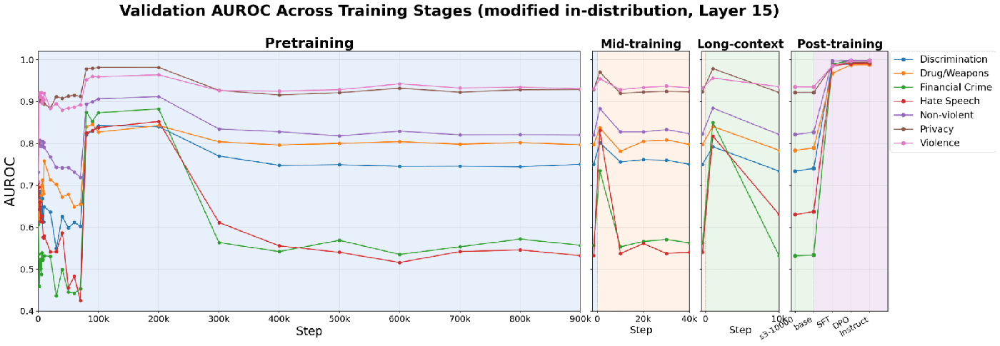
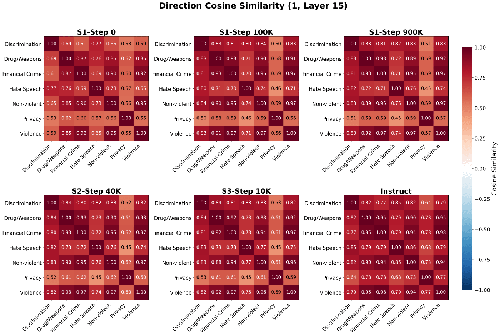
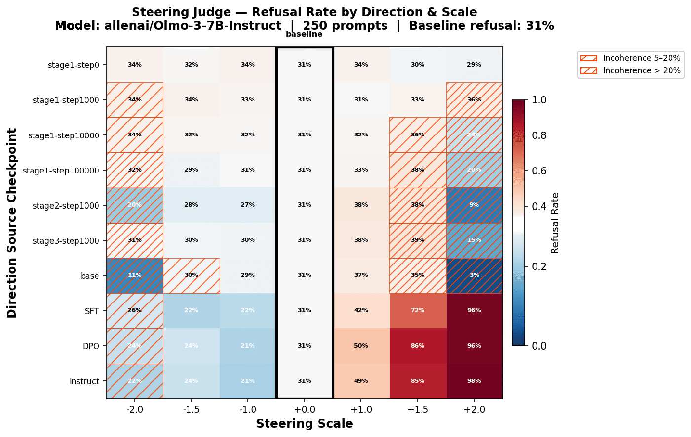

Harmfulness Directions in OLMo
Overview
This project studies how harmfulness representations emerge and evolve during the training of a Large Language Model. We extracted linear activation directions for seven harmfulness subcategories (discrimination, drug abuse, financial crime, hate speech, non-violent crime, privacy violation, and violence) plus a general harm category, across 39 checkpoints of OLMo 3 7B spanning from initialization to the final Instruct model. Each direction was evaluated as a linear probe and as a steering vector, tracking its geometry, probing performance, and behavioral effect throughout pretraining, mid-training, long-context training, and post-training. The full write-up is available on LessWrong.
Experimental Setup
1. Model and Checkpoints
We used 39 non-uniformly spaced checkpoints of OLMo 3 7B: dense early in pretraining (every 1k steps), sparser later, plus the base, SFT, DPO, and Instruct variants. OLMo was chosen because it is one of the few performant models with fully open intermediate checkpoints.
2. Datasets
Harmful prompts come from the BeaverTails dataset, with 1,000 training samples per subcategory; Alpaca prompts serve as the safe class. For evaluation we added lexically rewritten versions of the test prompts and out-of-distribution datasets (MaliciousInstruct, AdvBench, HarmBench).
3. Direction Extraction
For each checkpoint and subcategory, the direction is the vector from the safe centroid to the harmful centroid of residual stream activations at layer 15, selected by optimizing AUROC for general harmfulness on the Instruct checkpoint and kept fixed across all experiments.
4. Evaluation Strategy
- Probing: AUROC on in-distribution, lexically rewritten, and out-of-distribution datasets, with random-label and truthfulness controls.
- Geometry: cosine similarity of directions across checkpoints and across subcategories; centroid drift and direction magnitudes.
- Steering: residual stream intervention
activation + λ × directionon the Instruct model, with refusal rate and incoherence measured by an LLM judge.
Results and Analysis
Probing
In-distribution AUROC is high (~0.9) even at initialization, before any training. The signal cannot be semantic: it reflects superficial lexical and structural cues that already separate the datasets in the random model's activation space. On lexically rewritten prompts, early-checkpoint AUROC drops substantially for most subcategories, while post-training checkpoints recover near-ceiling performance, indicating genuinely learned generalization.

Out-of-distribution evaluations confirm that AUROC can be driven by several kinds of non-semantic signals: token-level cues, structural and formatting patterns, and dataset-level regularities. In-distribution separability alone says little about meaningful structure.
Geometry
The general harm direction does not drift uniformly: it shifts in discrete phases aligned with training stages, with the largest single jump at the base-to-SFT transition. The pattern is nearly identical for every subcategory, suggesting global training dynamics rather than concept-specific learning.
The subcategories occupy a shared yet structured space and never collapse into a single harmfulness axis. Violence, non-violent crime, drug/weapons, and financial crime form a tight cluster close to the general harm direction; privacy is a persistent outlier; hate speech and discrimination sit in between. This structure is established within the first few thousand steps and is later refined, not reorganized.


Centroid drift, centroid geometry, and direction magnitudes all point the same way: the scale of the directions is set early in pretraining, after which changes are mostly rotational and synchronized across categories.
Steering
We steered the Instruct model with directions from each checkpoint (λ from -2 to +2, 250 prompts, baseline refusal 31%). Early-checkpoint directions either do nothing or break the model into incoherence. From mid-pretraining (~step 100k) they become usable, and post-training directions are by far the most effective: positive steering with the Instruct direction drives refusal up to 98%, while negative steering yields more modest reductions.

Cross-checkpoint probing shows the same boundary: directions extracted from ~step 80k onward transfer well through post-training. The final harmfulness directions are not created from scratch during alignment; they become broadly recognizable in mid-pretraining.
Key Takeaways
- Harmfulness is not a single unified axis: a shared general-harm component coexists with persistent subcategory-specific structure.
- High in-distribution AUROC is an unreliable indicator of semantic representation; it can be driven entirely by lexical, structural, and dataset-level shortcuts.
- Representational change is synchronized across subcategories and happens in phases between training stages, pointing to global rather than concept-specific dynamics.
- Early training sets the scale and coarse geometry of the directions; later training mostly rotates them. Only directions from mid-pretraining onward steer behavior effectively.